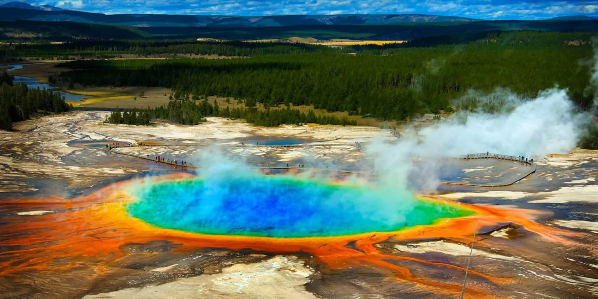
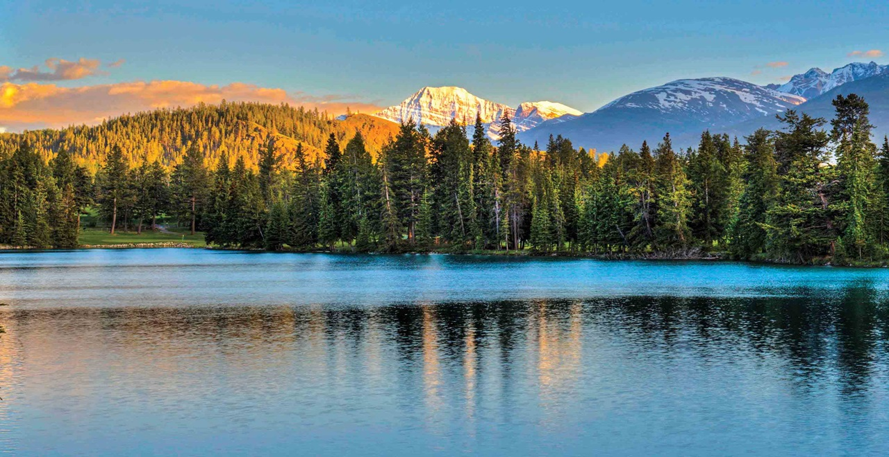

Dzika przyroda
Wyprawa do parków narodowych to podróż do serca dziewiczej przyrody. Zapraszamy do miejsc, gdzie natura wciąż dyktuje własne zasady, a krajobrazy zmieniają się od gęstych, prastarych lasów, przez głębokie kaniony, aż po krystalicznie czyste jeziora. Nasze wycieczki to szansa na spotkanie oko w oko z dziką zwierzyną, wsłuchanie się w śpiew ptaków i zanurzenie w ciszy, której nie zagłusza zgiełk miasta. To idealna opcja dla miłośników aktywnego wypoczynku i pasjonatów fotografii.
Z licencjonowanym przewodnikiem
Oferujemy starannie zaplanowane trasy, dostosowane do różnych poziomów zaangażowania – od lekkich spacerów dydaktycznych z przewodnikiem, po bardziej wymagające ekspedycje dla zaawansowanych piechurów. Współpracujemy z licencjonowanymi przewodnikami, dając pewność, że Twoja wyprawa będzie nie tylko niezapomniana, ale przede wszystkim bezpieczna i pełna fascynujących historii o lokalnych ekosystemach. Odkrywaj cuda natury z najlepszymi specjalistami.
Nasze tury

Yellowstone

Roztocze
(Zwierzyniec)

Vancouver